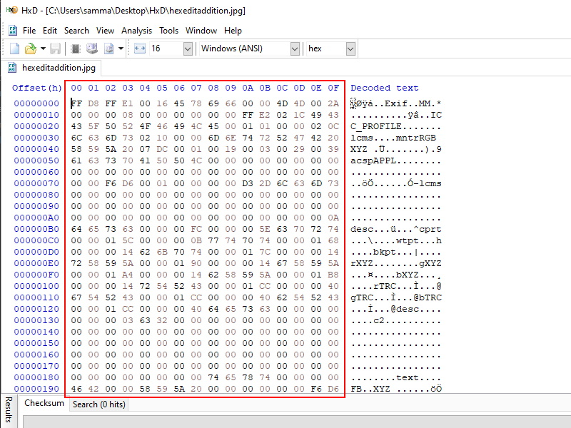
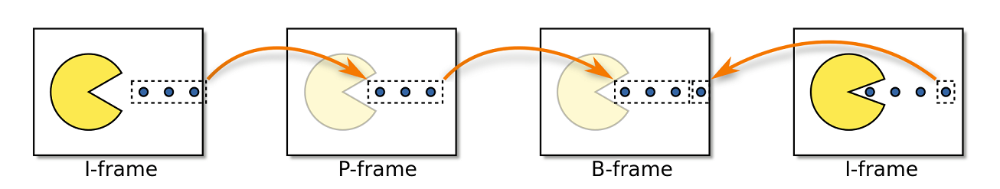

I will go over a method of image corrupting called hex editing (hex editing can be used to corrupt any file however). A hex editor is a program that will allow us to view and edit any machine readable files. If you were to create glitch art you would be hex editing image files, so we can use a .jpeg, a .png, or most other types of image files. As image files are made of machine code, we can now edit the code to change/corrupt the way in which the machine will interpret the image to look. Two things to take note of are that firstly hex editing is essentially trial and error since you will be editing hexidecimal code and secondly it is recomended to make a backup of whatever you are editing as you will lose the original file upon saving and you may end up corrupting your file to the point that it cannot be opened. Once youre done editing your code give it a save and open it with an image viewer to see your results.
Below is a hex editor with the section of code that is to be edited (this is hexidecimal section of the image file).
Below are a series of images of me at Scarborough Beach in 2018, they have been corrupted through hex editing.
Firstly we have the original. Then a version where I have randomly editing the code. Next there is a version where I have deleted sections of the code. And lastly we have a version where I have duplicated and extended the code in certain sections.
I created these images using HxD as a hex editor, the link to the software is Here!
For video methods I will focus purely upon 'Data Moshing', although hex editing can also work. Data Moshing works by blending the movement in one layer of a video with one layer of footage from another video. There are plenty of methods but I will focus upon 2 methods. These methods are I-frame manipulation and P-frame manipulation. I-frames are “inter” frames; I-frames contain the whole of the frame’s image data. I-frames are essentially normal images. On the otherhand we have P-frames, these are predictive frames. P-frames dont contain much image data but isntead represent the motion of pixels within parts of the frame between frames. You can think of P-frames as representing the movement of pixels between frames of video.
Above is a diagram (source: https://en.wikipedia.org/wiki/Video_compression_picture_types) which displays how video files are typically made up, we need to only understand the I and the P frames as they are the frames of use to us for corrupting.
I-frame manipulation is when we remove the I-frame from the section of video leaving only the P frames. When you try to play a video with no I-frames it will force the image from the last P-frame onto the next P-frame. This causes the image to 'stick' onto the motion of the next clip. The computer misinterprets the video content, believing that the image content has not changed, the computer renders the motion of the clip on the last. It may be best seen rather than described so below is an example of I-frame manipulation I created a few years ago using American Pyscho (2000) as a source. American Psycho is a rated 18 film. Viewer discretion is advised, however no blood or violence is shown in the clip.
P=frame manipulation is when we duplicate a P-frame multiple times in the same location, this creates a colourful effect where the image distorts. This is typically referred to as a 'blooming' effect. The motion of the video tends to go in the same direction once the P-frame is duplicated as we are taking the motion prediction from the P-frame and repeating it. The colourful aspect of this manipulation most likely comes from colour information being degraded through the repetition. As with I-frame manipulation it is most likely best to see an example to understand the 'blooming' effect. There is an example I have created below, which ironically had to be embedded on youtube as it would corrupt otherwise. One last thing to take note of which P-frame manipulation is that it will desync audio which has to be re-edited (the below clip contains the audio desync at the end).
I created these videos using Avidemux version 2.5, the link to the software is Here! However I recomend using some tutorials from online to understand the software as it can be a pain to understand at first.
The corruption of video games is mainly seen like video games, as a bit of fun! The most common way to corrupt video games is through games which are emulated. Emulation is able to emulate game systems from NES to Nintendo Switch. There are various programs that have been developed over the last decade which allow for corrupting games. However realtime corruptors have been created which can be attached directly to hardware, although these are incredibly rare.
The Corrupt Wiki a is able to provide much more information and a list of available corruptors for you to tinker with. Like the hex editor method you must be careful when corrupting as games are very fragile, meaning it is very easy for them to become unplayable. In addition there is some health and safety concerns, corrupted video games can have lots of flashing imagery and be very loud. Those with sensory disorders should be advised to be careful or avoid corruption content in this context. However I will attach a video below with two openings of Majora's Mask were Link's horse Epona has been affected by injecting code in realtime, with the second crashing the game.